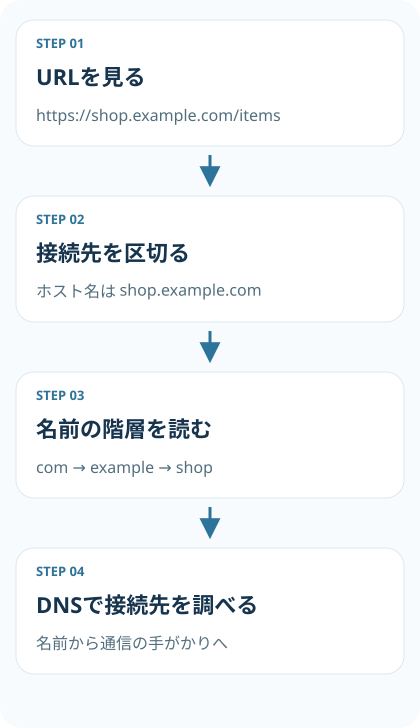

お店の名前を覚えていれば検索できますが、直接ページを開くときには example.com のような名前が使われます。これがドメイン名です。長い数字を覚える代わりに、名前で行き先を指定できるようにする役割があります。今回は、架空のお店のWebサイトを思い浮かべて見ていきます。
01 — DIGITAL BASICS
人が覚えやすい名前で、相手を指定する
通信では、IPアドレスという番号が相手を探す手がかりになります。ただ、人がたくさんの番号を覚えるのは大変です。そこで、ドメイン名と接続先の情報を結び付けるDNSという仕組みを使います。ドメイン名を指定し、DNSで必要な情報を調べることで、通信先へ近づけます。
ドメイン名は、お店のページの文章や写真そのものではありません。「名前」と「その名前で提供する内容」は分けて考えられます。お店がページを作り直しても、同じ名前を使い続けることがあります。逆に、似た内容に見えても別のドメイン名で運営されていることがあります。
02 — DIGITAL BASICS
URLの中の、どの部分がドメイン？
https://shop.example.com/items という説明用URLを見てみましょう。接続先のホスト名はshop.example.com、その中でexample.comというドメインの下にshopという名前を付けています。このような名前をサブドメインと呼びます。Webサイトの用途を分けるためなどに使われます。
後ろの/itemsはパスで、先頭のhttpsは通信方法の指定です。つまり、URL全体とドメイン名は同じものではありません。同じドメインを使うURLでも、後ろのパスによって商品一覧や案内ページを分けられます。

03 — DIGITAL BASICS
ドットで区切られた名前には階層がある
ドメイン名はドットで区切られ、右側から階層を見られます。example.comなら、comがトップレベルドメイン、その下にexampleがあります。名前の下にさらにshopを置けばshop.example.comです。ここでの階層は、ページ内の見出しの階層や、運営会社の組織図をそのまま表しているわけではありません。
また、ドットで区切られた最後の二つを見れば、どのドメインでも登録単位が分かる、と覚えるのは避けましょう。ドメインの種類によって登録の仕組みは異なります。今回はexample.comを読む範囲に絞り、「右側から名前のまとまりをたどる」と理解すれば十分です。
この節の参考：資料1
04 — DIGITAL BASICS
ドメインを用意することと、ページを作ること
ドメイン名を登録することは、その名前を使うための準備です。登録しただけで記事や写真が自動的にできるわけではありません。ページを置く仕組みと、名前をその仕組みへ結び付ける設定も必要になります。名前の利用は更新などの管理が伴うため、一度手続きすれば永久に管理不要というものでもありません。
使う側としては、サイト名のロゴと接続先のドメイン名を区別して見ると役立ちます。ロゴやページの見た目は似せられても、接続先の名前は別かもしれません。ただし、正しいドメイン名かどうかを見分けることと、内容を無条件に信用することも別です。名前、通信、内容を少しずつ分けて考えてみましょう。
REMEMBER
今日覚えておきたい3つのこと
- 01
ドメイン名は、人が名前で接続先を指定するために使う。
- 02
ドメイン名はURLの一部分。パスや通信方法とは役割が違う。
- 03
名前を登録すること、ページを作ること、DNS設定は別の準備。
参考資料・情報確認日
情報確認日：2026年11月19日。通信の基本を理解するために一部を簡略化しています。